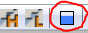

UDN
Search public documentation:
VFXOptimizationSplitScreenCH
English Translation
日本語訳
한국어
Interested in the Unreal Engine?
Visit the Unreal Technology site.
Looking for jobs and company info?
Check out the Epic games site.
Questions about support via UDN?
Contact the UDN Staff
日本語訳
한국어
Interested in the Unreal Engine?
Visit the Unreal Technology site.
Looking for jobs and company info?
Check out the Epic games site.
Questions about support via UDN?
Contact the UDN Staff
UE3 主页 > 粒子 & 效果 > 粒子系统 > 虚幻引擎 3 中的 VFX 优化 > VFX 优化： 分屏
UE3 主页 > FX 美术 > 虚幻引擎 3 中的 VFX 优化 > VFX 优化： 分屏
UE3 主页 > FX 美术 > 虚幻引擎 3 中的 VFX 优化 > VFX 优化： 分屏
VFX 优化：分屏
细节模式概述

图标查看 Medium Detail Mode（中级细节模式）。视图模式可以在编辑器中使用 View（视图）菜单/Detail（细节）模式设置进行设置。更改为 Medium（中级）查看 Medium Detail Spawn Rate Scale（中级细节生成速率比），您应该会看到红色的文本显示当前处于激活状态的细节模式。重点是只在调整 Medium Detail Mode（中级细节模式）的效果时才在这个模式中进行操作。默认情况下在游戏中将不会看到更改，除非您的项目默认为 Medium Detail Mode（中级细节模式）。 Medium Detail Spawn Rate Scale（中级细节生成速率比）是一个乘法器，将范围控制在 0-1 将会设置适当的值。基本上，设置为 .5 会将粒子发射数量减少一半，值为 1 则会使用当前发射率。对这个值进行限定，使其不会超出 1。 在放置 Ambient（环境）效果的过程中考虑分屏是一个好习惯。如果这个效果对于分屏而言不是必需的而且绘制函数调用数量很大，那么它可能是开始减少发射数量的好地方，尤其是在效果中只包含网格物体发射器的情况下。 重要的是记住粒子的 Draw Call（绘制函数调用）由材质确定，而且它的性能消耗是固定的，与发射数量无关。例如，在发射率为 30 的发射器上的 1 pass 材质只是一个绘制函数调用。命令
debugCreatePlayer1
如果您只有 1 个控制器，那么请使用命令 ssswapControllers 在 Player（玩家）之间跳转。
使用命令 STAT SPLITSCREEN 启用分屏图层
对于粒子效果，引用 Particle Draw Call（粒子绘制函数调用）项，注意 MeshParticle 项，通过设置 MediumDetailSpawnRateScale 可以在这里快速生成最多细节。
使用命令 DumpParticleFrameRenderingStats 查看给定区域的 drawCall
这个命令会转存电子表格以及进行该操作的地方的屏幕截图。如果启用了 STAT SPLITSCREEN 命令，那么在拍摄截图的时候会看到 Draw Call（绘制函数调用）的读数。这个屏幕截图是估算，因为它是在数据转存后截取的，而且它不仅仅是一个可视参考。
查看电子表格中的统计数据非常简单，电子表格应该看起来像下面图片中显示的一样。
 在这种情况下，补救方法非常简单，我们会使用一个必须调用一系列网格物体并且很可能循环生成的效果。但是它可能比较难处理，因为如果 1 效果是引起问题的主要原因，那么您想要保持当前的视觉效果，只有一个选择，就是将网格物体转换为平面实例。
但是，如果分屏不需要发射器，那么将
在这种情况下，补救方法非常简单，我们会使用一个必须调用一系列网格物体并且很可能循环生成的效果。但是它可能比较难处理，因为如果 1 效果是引起问题的主要原因，那么您想要保持当前的视觉效果，只有一个选择，就是将网格物体转换为平面实例。
但是，如果分屏不需要发射器，那么将 mediumDetailSpawn 速率设置为 0.00。
使用适当的描述为 Spread Sheet（电子表格）统计数据栏命名：
- RenderTime ms
- 渲染这个效果需要多长时间（毫秒）
- NumComponents
- 处于查看和激活状态中的粒子系统的实例数量。
- NumPasses
- 材质中被发射器调用的 pass 数量
- NumEmitters
- 粒子系统中的发射器数量
- NumDraws
- 所有粒子系统实例的绘制函数调用的累计数量